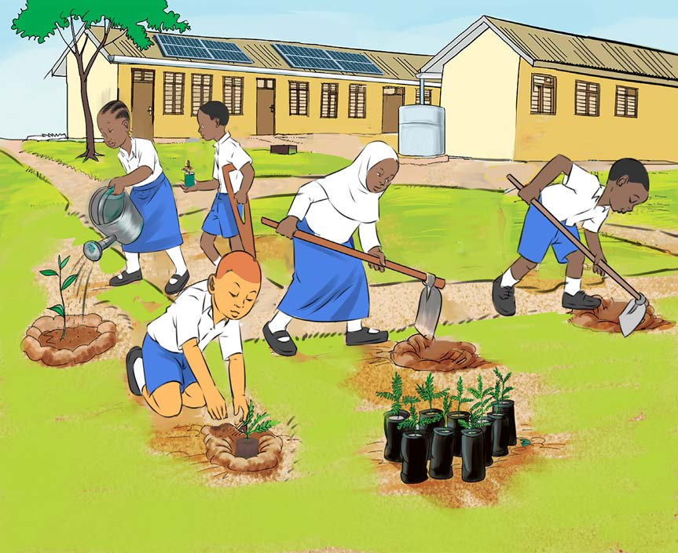

Second, select a fertile area, and then clean it by ploughing and tilling it. Some trees may not require tilling of the land before planting them but may require digging holes for planting tree seedlings. In case the area you have selected is not fertile, you should improve the soil by mixing it with animal manure or compost before planting the seedlings.
Figure 4 shows pupils planting trees in the holes they have dug.

Third, select seedlings which are healthier and free from disease for planting. Fourth, it is important to care for the seedlings by watering them, if there is a shortage of soil moisture and by weeding whenever necessary. Furthermore, to prevent pests and diseases, use environment-friendly pests and disease control methods. For example, plant insect-repelling plants such as marigolds and calendula.